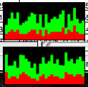
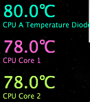
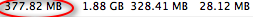
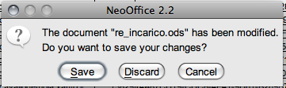
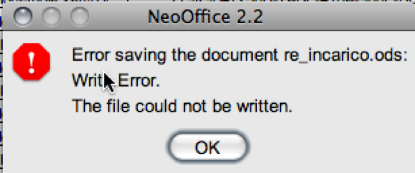
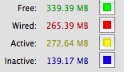

Feb 18 2008

OpenOffice, PORCO DIO!
Giorni e giorni di silenzio… o ci funzionava tutto, o non stavamo facendo un cazzo, oppure abbiamo provato orrore senza trovare le parole adatte per condividerlo, come quando stai col culo mezzo seduto, il dito su play, e di colpo muoiono a scelta: samba, nfs, i permessi, la wifi, il corpo di cristo… che fai? dici porcoddio e fai pippa, perche’ secondo gesu’ non devi USARE.
A qualcun altro invece (vjt) e’ toccato un tasto DOLENTISSIMO (ma soffice):
OpenOffice, PORCO DIO!
ODIO OPENOFFICE. OPEN OFFICE, che i tuoi programmatori possano soffrire lancinanti PENE surriscaldati da un CLUSTER DI ATHLON XP dedicato a far girare L’ORRIDO SOFTWARE CHE AMMORBA LA CPU

LA QUALE INIZIA AD EMETTERE SPASIMI E CALORE INFERNALE

L’ORRIDO SOFTWARE SCRITTO CON MEZZA CHIAPPA IN GIAVAMERDA CHE RIEMPIE LA RAM DI CALL STACK LUNGHI UN CHILOMETRO DIDDIO

E voi direte, ok, e` OPEN SORCA, NON L’HAI PAGATO, CAZZO VUOI?!
Apparte che l’ho pagato perche` ho donato cash agli infausti programmatori, va bene, okay, c’e` da aspettare? No problem! C’e` da comprare 24GB DI RAM per far girare uno stupido FOGLIO ELETTRONICO? OKAY! Mi sento piu` fico con 2GB DI RAM! MA PORCO DIO ALMENO SALVAMELI I FILE, BASTARDO!
BASTARDOOOOOOOOOOOOOOOOOO!


BASTA! BASTA! VIA DALLA MIA RAM E DALLA MIA CPU! SOFTWARE’E'MMERD!

vjt
16 responses so far
Ah beh, se usi quella MERDA di os x con NEO OFFICE, un po’ di colpa ce l’hai ANCHE TU.
posso ?
ma scusa hai OSX e usi neooffice ?ma ti vuoi male ?
cazzo mica sei su linux che abbiam le pezze nel culo e dobbiamo tenercelo volenti o nolenti
hai iuorcs hai emmesseoffice e usi neoffice
te le cerchi (come dice gav, ma x altri motivi)
Hai ragione dio porco bestia, ma effettivamente quel cancro biblico che stai usando si basa su un versione di OO un pò datata. Dalla 2.3 su Linux o WindoWS non si comporta malaccio…
Ma infatti, dopo quest’accaduto, ho chiuso con openoffice. Tanto bello iuorchs!
=)
Te la prendi con OpenOffice del cazzo e poi parli di tutt’altra cosa :
http://www.neooffice.org/neojava/it/faq.php#11
Se qualcosa è BASATA su un altro progetto non vuol dire che ne fa parte direttamente e quindi perché ne dovrebbe rispondere OpenOffice e la JAVA di merda.
Porco Dio, spero che tu soffra le pene dell’inferno per aver aver usato Software Open senza leggere quelle cazzo di FAQ.
Leggere i manuali e le FAQ sono le prime merdose cose che ti insegnano i vecchi NERD della minchia quando decidi di rovinarti la vita entrando in quel mondo di merda che è Open Source.
You Are Stupid!
RTFM!
Ciao PorcoDio†, FAQ o non FUCK OOo fa schifo, e non lo dico solo io: http://snurl.com/1zxrh
E non venirmi a dire che i Methodz e le Routinez che debbono salvare su disco rotante lo STOOPID FILE che si sta editando sono roba di NeoMinchioffice, eh?! Sono ereditate dirette dirette da quell’orribile accrocchio maledetto dal signore che risponde al nome di OOo.
Ciao vjt non difendevo OpenOffice_suck ma allo stesso tempo non venirmi a dire che il progetto non mette mani anche alle Routinez e Methodz di OOo, perché non ci credo. Quindi la lamentazione più che giusta dovresti indirizzarla a NeoOffice stop.
Poi puoi cercare qualsiasi cosa Open Source e non, inserendo la chiave sucks che sbucano migliaia di risultati e non lo dico solo io, ma google!
http://snurl.com/h45h34
http://snurl.com/h45h34¹
http://snurl.com/h45h34²
Non uso office. Non uso office perche’ non mi serve.
Non uso office perche’ e’ pieno zeppo di merda. Non uso office perche’ trovo sempre lo stronzo malcagato da una lurida troia che utilizza l’ultimissima versione. Non uso office perche’ ho sempre visto rileggere alla perfezione il .doc del porcoddio solo nella stessa cazzo di release dello stesso cazzo di service minchia dello stesso cazzo di pc di merda.
Fuori dal pc che ha prodotto quella merda di .doc, il nulla.
La portabilita’? Una bestemmia.
Io non so se e’ ancora cosi’, ma non e’ uso del porcoddio sistemare le cose. Semmai peggiorarle… quello lo fa sempre volentieri.
Ed infatti esisteva un tempo un programmetto della minchia chiamato staroffice. Ed esisteva un povero stronzo, io, che decise di usare il programmetto della minchia chiamato staroffice che faceva due merdate in croce ma le faceva e non era solito rompere i coglioni.
Poi arrivo’ OpenOffice. OpenOffice con binari da 100 mega. Con la strafottutissima virtual machine GIAVA che devi avere per usare il merdoso macigno OPEN SURS.
Poi arrivarono a ruota le bestemmie perche’ il programmino della minchia che tutt’ora uso ha preso in prestito dal merdoso programma che non ho mai voluto usare tutto cio’ che ho sempre odiato.
E allora: porcoddio!! Porcoddio perche’ gia’ so.
Gia’ so.
Gia’ so che arrivera’ un giorno in cui preso da raptus di follia omicida spendero’ dei sudatissimi grancazzo di NEURI per comprare Microsoft OfficeMinchiaFritta2009.
Non perche’ OfficeMinchiaFritta2009 funzioni meglio o mi serva.
NO, GIAMMAI!!!
Ma perche’ quando mi fara’ girare i coglioni perlomeno avro’ qualcuno da infamare e lo potro’ infamare senza sentirmi dire “e’ gratis”.
Col fatto che e’ gratis ora sembra che non ci si possa piu’ lamentare.
Affanculo. Mi voglio lamentare, ho bisogno di lamentarmi. E se devo pagare 300 NEURI pago 300 NEURI per avere il sacrosanto diritto di incazzarmi e offendere cristo, la madonna e l’intera Microsoft senza che spunti un fottuto NERDONE a dirmi che e’ gratis o che c’e’ dietro chissa’ quale filosofia.
FANCULO AI NERDONI. FANCULO AL CRISTO SODOMITA. FANCULO AD OPENOFFICE.
da quando soffice e’ senza macchia ? su un pc con “poca” ram che avevo tempo fa, quando volevo aprire uno o piu’ fogli excel avevo il tempo di:
CAGARE
fotografare la merda da piu’ angolazioni
aprire un blog e un photoblog sulla mia merda
essere slashdottato
e al mio ritorno open office stava ancora co la finestrona GRIGIA della fatica dell’OS.
lo so che qua ci si lamenta, che tocca offendere qul porco di dio cane, che OO è lento come una troia obesa in calore, ecc…ma onestamente le alternative non mi sembrano meglio.
L’office 2007 è fatto di merda, di tanta merda, con le sue finestrelle azzurrine e di altri colori simil-vomito, simil-paradiso del dio cane. E poi DEVE occuparti più di 1.5 GB PORCO DIO, 1.5 per quelle 4 stronzate che deve fare uno con office…
Quindi bravo, lamentati perchè è sacro farlo, ma installati l’OO aggiornato, non quella merda di neoOffice “psico office”, lui si nato per questioni filosofiche e perchè gli sviluppatori di OO rubavano sempre la merenda a quelli di neoOffice.
NECRO-OFFICE
Quando faccio per salvare un file su OO, se clicco su “file” una volta su 10 crasha irrimediabilmente. Muore tutto di tutto.
Pero’ se faccio CTRL+S va’ alla straglande eh!!!1111!!!!!!1!!11!!
MA PORCODDDDDDDDIO IO USO OPEN OFFICE PUNTO ORG SU WIX XP E’ FUNZIONA BENE CAZZOODIDDIO!!!!!
PUTTANTA LA GROTTA DEL CULO DI EVA ASSEMBLATEVI MEGLIO QUEI MINKIA DI PC!!!!
ASSEMBLATEVI MEGLIO QUEI MINKIA DI PC!!!!
se vabe’! CIAOOOOOOOOOOOOOOOOOOO.
questo blog sta precipitando sempre di piu’…
Raga, porco il vosto iddio!
usate vim.
madonna negra!!!!
e se nn sapete come si usa fare
man vim.. ;)
pallotron: Mi dispiace di non avere il poter di Hitler di eliminare le persone che lasciano commenti che non rientrano nella Santa Sfera del tuo Giudizio Illibato.
kburn: vimtutor, imbecille.
Ah, tutto e’ decadente, tutto e’ merda, \x/ la merda.